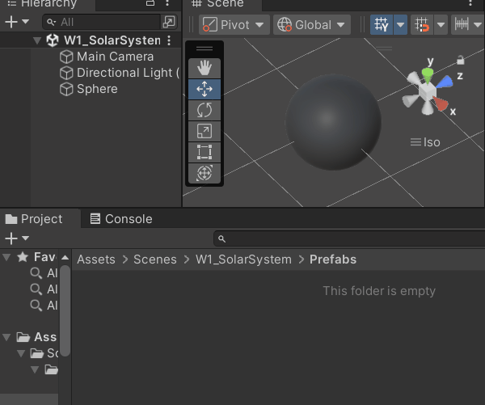
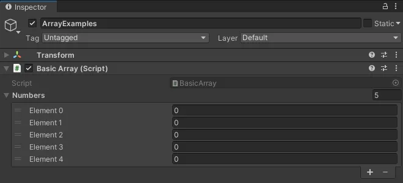
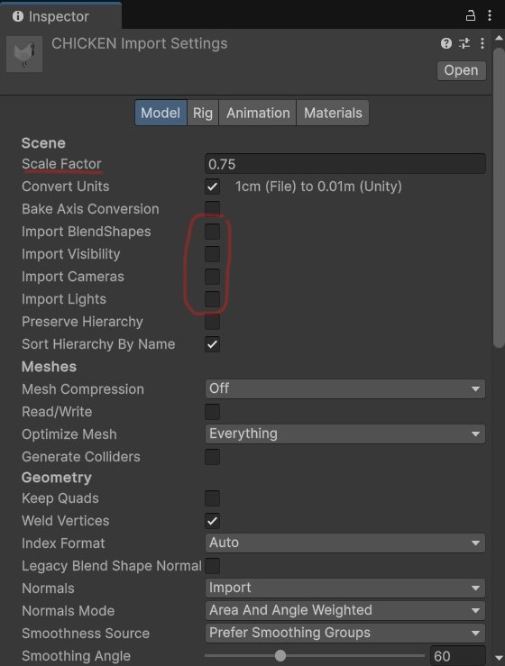
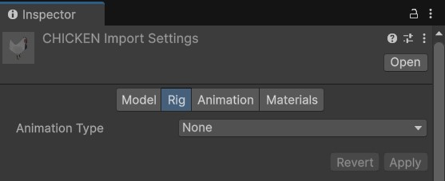
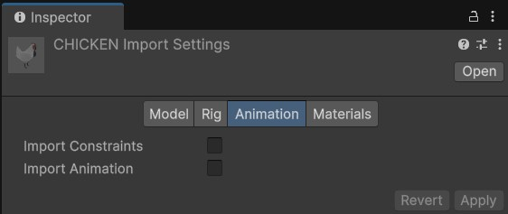
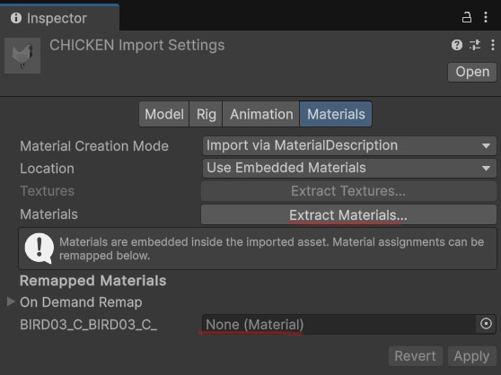
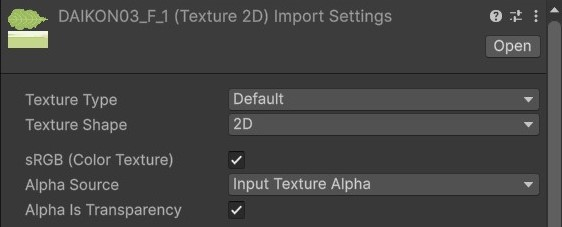
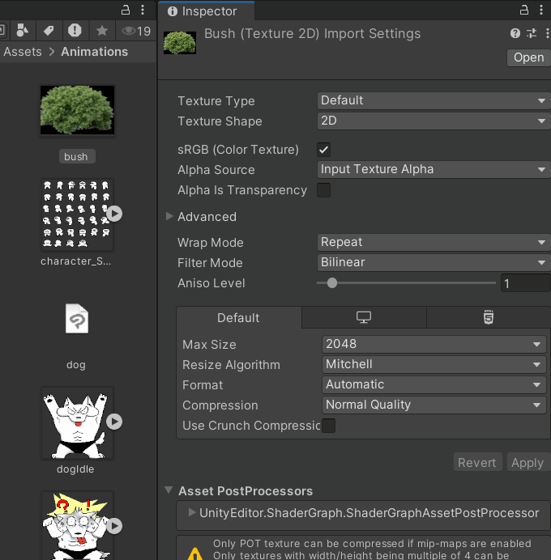
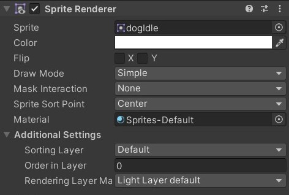
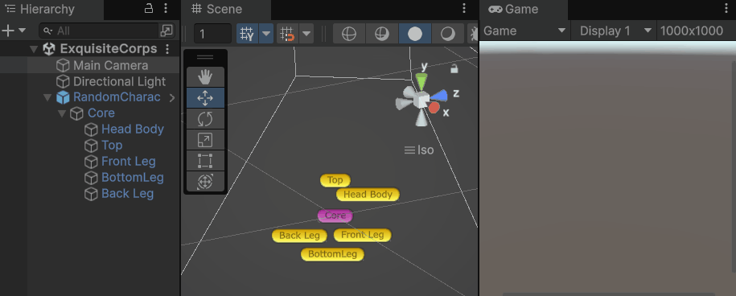

Prefabs, Loops, Arrays, Importing 2D and 3D Assets
📦 Unity packages from today's class:
- Exercise from last class: Solar System Generator
- Exquisite Corpse Demo
- In-class exercise: Spawn Random Prefab at Random Position
- Spawn at random position within set maximum distance.
- Spawn at random position within set min-max range along X Y and Z axes.
- Spawn at random positions selected from a given array of positions (without repeats).
📚 Other relevant resources to today's topic:
Before we begin...
Review from last class
- 📌 Reading Response 1 is DUE today!
- Transform component and its properties
- Vectors and how to use them
- Vector math operations and method functions
- Using vectors for procedural animation
Exercise from last class
How do we make a solar system that dynamically generates at the start of the scene:
- a random number of planets and moons;
- a set distance interval between each consecutive sibling planet?
Prefabs
Read about Prefabs in the Unity Manual.
Prefabs allow you to store a GameObject and its information (including its components, property values, child objects, etc.) into your Unity project folder as a reusable Asset.
This Prefab Asset can be used as a base template from which you can create and modify new Prefab instances in the scene.
How to create a Prefab from an existing GameObject in the scene
Click and drag the GameObject from the Scene Hierarchy into your project folder panel.
The GameObject should now be marked with a blue icon, and have an arrow button to the right of its name that leads you to the Prefab editor.

How to Instantiate a GameObject
We use the Instantiate() method function to spawn new instances of a GameObject in our scene.
Instantiate(someGameObject);
You could also pass a GameObject instance into a GameObject variable. This allows you to reference it later in your script.
GameObject obj = Instantiate(someGameObject);
//let's say we want to change the position of this instance
obj.transform.position = someVector;
//or set it to a new parent
obj.transform.parent = someParentObject;
The Instantiate() method can also be called in other ways that allow you to pass multiple parameters at once.
The Unity Scripting API lists all the different ways you can declare the Instantiate() function.
For example:
GameObject obj = Instantiate(
spawnThisGameObject, //GameObject
atSomePosition, //Vector3
atSomeQuaternionRotation, //Quaternion
underSomeParent); //Transform
Instantiate and Destroy VS SetActive()
If you need to completely remove a gameobject or component from the scene, you may use the Destroy() function like so:
//removes the gameObject from the scene
Destroy(gameObject);
//removes a script component called "ThisScript" from the gameobject
Destroy(GetComponent<ThisScript>());
However, instantiating and destroying objects over and over again can add a toll on your build's performance.
Whenever possible, you may want to opt for toggling objects' active state / components' enabled state in your scene instead.
//checks if gameobject is currently active
if (gameObject.activeSelf){
//deactivates the gameObject in your scene
gameObject.SetActive(false);
}
//checks if this component's behaviour is enabled
if (GetComponent<ThisScript>().enabled){
//OR
//checks if this component's behaviour is enabled
//AND if the associated gameObject is active
//if (GetComponent<ThisScript>().isActiveAndEnabled){
//deactivates the component called "ThisScript" in your gameObject
GetComponent<ThisScript>().enabled = false;
}
//OR
//you can make a toggle function that switches
//the boolean enabled state between true and false
void ToggleComponentEnabled(){
//someBool = !someBool;
//i.e. set this bool to be NOT what it currently is
GetComponent<ThisScript>().enabled = !GetComponent<ThisScript>().enabled
}
Loops
Loop functions allow you to repeat an action multiple times.
Watch the Unity Tutorial below to learn about:
- While loops
- Do-while Loops
- For Loops
... and one more video about Foreach Loops.
Arrays
Read about Arrays in the Unity Manual.
Arrays allow you to store multiple objects in a single variable.
Each object stored in an array (ie. an array element) is assigned an index number, starting with the first element being numbered as zero, not one. To call an element from an array, we must reference its index number like this: arrayName[indexNumber]
For example, below is a string array called "fruits".
| Array Index | 0 | 1 | 2 |
|---|---|---|---|
| Array Element | "apples" | "pears" | "oranges" |
string[] fruits = {"apples", "pears", "oranges"};
Debug.Log(fruits[0]); //returns "apples"
Debug.Log(fruits[1]); //returns "pears"
Debug.Log(fruits[2]); //returns "oranges"
Every array has a Length property, which gives you the number elements in the array.
string[] fruits = {"apples", "pears", "oranges"};
Debug.Log("Length of fruits array: "+ fruits.Length);
// console will print "Length of fruits array: 3".
Arrays cannot be resized while the project is running. If you need to resize a container of objects, either recreate the array with a different length, or use a List instead.
How to declare an array
Declare the type of variable that is being stored in the array, followed by square brackets [] .
float[] someFloats; // a private float array
private Transform[] someTransforms; // a private Transform array
public Vector3[] someVectors; // a public Vector3 array
[SerializeField] GameObject[] someGameObjects; // a private GameObject array that is visible in the Inspector.
You can initialise the array by:
- using an array constructor method in your scripts;
// Creates an array with 5 empty elements int[] numbers = new int[5];
// Initialises array with elements numbers = {1, 2, 3, 4, 5};
//OR declare and initialise at once int[] numbers = new int[] {1,2,3,4,5}; - storing elements in the Inspector, if your array is either public OR private with a [SerializeField] attribute;

- using a method that sets the contents of an array
//stores all GameObjects in the scene with tag "Respawn" into the array GameObject[] respawns = GameObject.FindGameObjectsWithTag("Respawn");
Importing 3D Assets
Generally, .fbx is the preferred format for 3D asset imports in Unity, but .obj formats are also acceptable if there is no animation data involved.
If there are any texture files or material data (such as .mtl files that accompany .obj formats, or texture images), it's best to keep them in the same file directory as the 3D asset that they belong to.
Import settings for 3D models
You can calibrate your import settings for 3D models from the Inspector window by selecting it in the Project Window.
Model
Modify the scale at which the model will be imported into Unity, if needed.
No need to import BlendShapes, Visibility, Camera, nor Lights if you just need the 3D model as is.

Rig
Set Animation Type to "None" if your model does not have any armature rigs.

Animation
No need to import animation if there's no animation to import.

Materials
If you'd like to modify the embedded material of your 3D asset, click Extract Materials. This will create a new editable material in your Project Window that is based on the original imported material.
You may also remap your materials by clicking and dragging your custom materials into the relevant channels under On Demand Remap.

Importing 2D Assets
Image as material texture for 3D surfaces

By default, images will be imported as default textures.
If your image has transparency, make sure that you are detecting an Alpha Source (default: Input Texture Alpha), and that "Alpha Is Transparency" is marked true.
Lit VS Unlit shaders
When creating a new material in the Universal 3D pipeline, the default shader used for this material is a Universal Render Pipeline (URP) Lit shader. This means your material render will account for lighting in your scene.
If you change this to an URP unlit shader, the material renders independently of the surrounding lighting.

URP also has shaders that are specific to sprite textures. In the shader drop down, go to URP > 2D > select a Sprite shader.

Material Properties
(Note: The following properties may or may not be available depending on what material shader you're using. Pictured below are properties available in the URP Lit shader.)

Here are some notable properties you may consider adjusting for your material asset:
- Workflow Mode: Choose between metallic or specular.
- Surface type: Opaque by default. If your texture has transparent areas, you may need to change this to Transparent to reflect the alpha channel.
- Render face: Front (only) by default. In 3D meshes, each face has a normal vector which determines which side the material should render on. If you want your texture to be visible on both sides of your mesh surface, you may need to change this to be "Both".
- Texture maps: Add a texture asset in the box to the left of "Base Map".
- Emission: Emit light across the material surface (you may also add an image texture here as an emission map). If you have Global Volume, this will add a glow effect to your material surface at a positive-value intensity.
- Tiling and Offset: Determines how your texture is scaled / positioned along the mesh surface.
- Specular Highlights and Environment Reflections (under Advanced Options): Toggle these checkboxes and see how they affect the way your material is lit.
Watch out for Z-fighting in intersecting mesh surfaces!

When meshes intersect with other mesh objects, especially if they're overlapping on top of one another, you may encounter a bug that flickers between the two meshes as your camera moves past it. This may be due to Z-fighting, which happens when the camera confuses the depth levels of intersecting mesh objects, and can't determine which to render on top of the other.
The best practice is to keep your mesh objects separate from each other, and avoid intersecting mesh objects altogether.
Image as sprite
Images can also be imported as a "Sprite (2D and UI)" texture type. This allows you to select this image for the Sprite component for objects in your scene, and for UI Images.

Sprite Renderer Component
This component allows you to use 2D sprites in GameObjects without using any meshes.
If you're importing a sprite sheet containing multiple sprites, you will also need to do the following:
- Set the Sprite Mode to "Multiple"
- Install the 2D Sprite package from Unity's package manager -- this will enable the Sprite Editor that you can use to slice your sprite sheet into individual sprites.
- When opening up the Sprite Editor, you may choose to Slice Grid by Cell Size or Cell Count. Click "Apply". Now you will have access to individual sprites when you click the expand arrow on your sprite sheet asset.

Once you have your texture correctly imported, create a new empty GameObject and add a Sprite Renderer component. Alternatively, you can also drag the sprite asset directly from your Project window into your scene hierarchy.

Consider adjusting the following properties according to your needs:
- Sprite: Set this to the sprite texture you imported.
- Color: Change the tint of your sprite material.
- Order in Layer (under Additional Settings): Determines the order in which overlapping sprites are rendered (higher order values render above sprites with lower order values.)
To change sprites via C# Script
public Sprite spr1, spr2; // attach your sprite textures in the inspector
SpriteRenderer sprRend; // attach this script to the same object containing your sprite renderer
void Start()
{
sprRend = GetComponent<SpriteRenderer>();
sprRend.sprite=spr2;
}
//you could also make this a function
//and call it using "ChangeSprite(spr2)", for example
public void ChangeSprite(Sprite toThisSprite)
{
sprRend.sprite = toThisSprite;
}
In-class exercise
Write a script that instantiates multiple prefabs that are:
- chosen at random from an array; AND
- assigned a random position within a given scope. (i.e. nothing should be "out of bounds", OR objects should only spawn at very specific positions.)
Consider:
- random prefabs within a given distance / range along world axes.
- random prefabs that are assigned different positions from a given array of coordinates.
(Hint: Try using:
- array.Length;
- Random.Range(); AND/OR
- empty GameObjects as positional references.)

Some course reminders
- Homeplay 1 and Project 1 Sketch are both due next class.